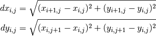

2.3.8.3. Content¶
Grid utilities.
It deals with bounds, areas, interpolations…
See: Gridded data.
-
class
GriddedSelector(grid, lon=None, lat=None, update_kwargs=False, apply_mask=True)[source]¶ Bases:
objectA
cdms2.selectors.Selectorwith grid preprocessing
-
axes2d(*args, **kwargs)[source]¶ Alias for
create_axes2d()
-
axis1d_from_bounds(axis1d, atts=None, numeric=False)[source]¶ Create a numeric of formatted 1D axis from bounds
- axis1d: Input 1d axis from which we get bounds
- numeric: Return a simple numeric array
- atts: Attributes for outputs axis
Example: >>> xx = axis1d_from_bounds(xxb)
-
bounds1d(xx, cellwidth=None)[source]¶ Compute bounds on a linear sequence or axis. It is based on
cdms2.genGenericBounds()of CDAT.Example: >>> bounds1d(xx).shape 360, 2
Returns: xx(nx,2)
-
bounds2d(*xyaxes)[source]¶ Compute bounds on a rectangular grid.
Params: - xyaxes: 2D arrays(ny,nx) (or 2x1D arrays)
Example: >>> xx_bounds,yy_bounds = bounds2d(xx,yy)
Returns: xx(ny,nx,4),...
-
bounds2mesh(xb, yb=None)[source]¶ Convert 2D 4-corners cell bounds arrays (results from
bounds2d()) to 2D arraysParams: - xb: array(ny,nx,4) or array(nx,2)
- yb: None or array(ny,nx,4) or array(ny,2)
Return: xxb(ny+1,nx+1),yyb(ny+1,nx+1)
-
cells2grid(xxb, yyb)[source]¶ Convert a grid of cells (grid of corners, like results from
meshcells()) to a grid (grid of centers)Params: - xxb: X of corners (ny+1,nx+1)
- yyb: Y of corners (ny+1,nx+1)
Returns: xx(ny,nx),yy(ny,nx)
-
check_xy_shape(xx, yy, mesh=None)[source]¶ Check that xx and yy have the same shape
- xx: X positions (in meters or degrees).
- yy: Y positions (in meters or degrees).
- mesh: Return a 2D axes if True, or if None and xx and yy have not the same shape [default: None]
Example: >>> xx2d, yy2d = check_xy_shape(xx, yy, mesh=True)
-
coord2slice(gg, lon=None, lat=None, mode='slice', mask=None, assubmask=True, squeeze=False, **kwargs)[source]¶ Convert from coordinates to indices on grid or axes
Params: gg: A grid, a cmds variable with a grid, a tuple of axes or an axis.
lon/lat: Interval of coordinates or slice. If single coordinates, the interval becomes for instance
(lon,lon,'ccb').mode, optional: Output mode. You can pass only the first letter.
mask, optional: Also use this mask to get indices (for 2D axes only).
squeeze, optional: If
assliceis False adasslice, optional: DEPRECATED. Use
mode='slice'instead.
Return: In array mode, it always returns an array of indices of shape
(2,nvalid), possibly empty if not intersection if found.Here
i/jsliceis a slice or a tuple of indices, depending on asslice. It can also beNoneif not intersection are found.If
ggis grid, a tuple of axes or a 2D axis:islice, jslice, mask. In case of a tuple of 1D axes,maskisNonebecause not relevant.If
ggis a 1D axis:ijslice, just as themapIntervaExt`()method of 1D axes.Examples: >>> ijk = coord2slice(lon1d, lon=(lon0,lon1), mode='i') >>> xijk, yijk, mask = coord2slice((lon1d,lat1d), lon=(lon0,lon1), lat=slice(0,3), mode='i') >>> islice, jslice, mask = coord2slice(gridcurv, lat=(lat0,lat0,'ccb'), mode='s') >>> xijk, yijk, mask = coord2slice(lon2d, lon=(lon0,lon1), mode='i') >>> ij = coord2slice(grid, lon, lat, mode='a')
-
create_aux_axes(x=None, y=None, bounds=False, numeric=False, lonid=None, latid=None, iid='points', xatts=None, yatts=None, xbounds=None, ybounds=None, nobounds=False)[source]¶ Create auxilary 1d axes
Example: >>> lon1d, lat1d = create_aux_axes(x1d, y1d)
Params: - xaxis, optional: 1D axis or array
- xaxis, optional: 1D axis or array
- xatts, optional: Attributes for output auxilary X axis
- yatts, optional: Attributes for output auxilary Y axis
- lonid, optional: Id of longitude axis [defaut=’lon’].
- latid, optional: Id of latitude axis [defaut=’lat’].
- iid, optional: Id of i axis [defaut=’iid’].
- jid, optional: Id of j axis [defaut=’jid’].
- xbounds2d, optional: 2D bounds of input xaxis
- ybounds2d, optional: 2D bounds of input yaxis
- nobounds, optional: create (True) or not (False - default) bounds of axis
Return: xaxis2d,yaxis2d
-
create_axes2d(x=None, y=None, bounds=False, numeric=False, lonid=None, latid=None, iid='ni', jid='nj', xatts=None, yatts=None, xbounds2d=None, ybounds2d=None, nobounds=False)[source]¶ Create 2D numerical of complete axes
Example: >>> lon2d, lat2d = create_axes2d(x2d, y2d)
Params: - xaxis, optional: 1D or 2D X axis
- xaxis, optional: 1D or 2D Y axis
- xatts, optional: Attributes for output 2D X axis
- yatts, optional: Attributes for output 2D Y axis
- xbounds2d, optional: 2D bounds of input xaxis
- ybounds2d, optional: 2D bounds of input yaxis
- nobounds, optional: create (True) or not (False - default) bounds of axis
- numeric, optional: Only return numerical values instead of complete axes
- bounds, optional: Return extended axes positioned on bounds (useful for pcolor).
Deprecated: use
meshbounds()instead. - lonid, optional: Id of longitude axis [defaut=’lon’].
- latid, optional: Id of latitude axis [defaut=’lat’].
- iid, optional: Id of i axis [defaut=’iid’].
- jid, optional: Id of j axis [defaut=’jid’].
Return: xaxis2d,yaxis2d
-
create_curv_grid(xaxis, yaxis, xatts=None, yatts=None, id=None, mask=None, **kwargs)[source]¶ Create a curvilinear 2D grid from 1D or 2D axes
Params: - xaxis: Numeric or formatted X axis
- yaxis: Numeric or formatted Y axis
- xatts, optional: Attributes of X axis
- yatts, optional: Attributes of Y axis
- id, optional: Id of the grid
- Other keywords are passed to
create_axes2d()
Example: >>> curvgrid = curv_grid(lon2d, lat2d)
See also:
-
create_grid(lon, lat, gtype=None, mask=None, lonatts={}, latatts={}, **kwargs)[source]¶ Create a cdms rectangular or curvilinear grid from axes
Params: - lon: Array or axis of longitudes or any argument passed to
create_lon(). - lat: Array or axis of latitudes or any argument passed to
create_lat(). - mask, optional: Grid mask.
- (lon/lat)atts, optional: Attributes to set for axes.
- gtype, optional, string: grid type as one of None, ‘rect’, ‘curv’, ‘unstruct’
Return: A
cdms2grid object.Example: >>> create_grid([1.,3.,5.,7], numpy.arange(45., 60., .5)) >>> create_grid((.1, 8., 1.), (45., 60., .5))
See also: - lon: Array or axis of longitudes or any argument passed to
-
create_grid2d(*args, **kwargs)[source]¶ Alias for
curv_grid()
-
create_var2d(var, xaxis=None, yaxis=None, xatts=None, yatts=None, gid=None, copy=1, lonid=None, latid=None, iid=None, jid=None, **kwargs)[source]¶ Create 2D cdms variable with on a proper 2d curvilinear grid
You should generally call this routine when you want to attach 2D axes to a variable. This may happen with netcdf that doesn’t follow CF conventions, as in the example bellow.
Example: >>> f = cdms2.open('myfile.nc') >>> lon2d = f('X') >>> lat2d = f('Y') >>> sst = f('sst') >>> f.close() >>> sstc = create_var2d(sst, lon2d, lat2d)
Params: - var: Numeric or formatted X axis
- xaxis, optional: Numeric or formatted X axis. Mandatory if var is not a cdms variable!
- yaxis, optional: Numeric or formatted Y axis. Mandatory if var is not a cdms variable!
- atts, optional: Attributes of the variable .
- xatts, optional: Attributes of X axis.
- yatts, optional: Attributes of Y axis.
- gid, optional: Id of the grid.
- All other keywords are passed to
cdms.createVariable()
Return: A
MV2array on a curvilinear grid.See also:
-
curv2rect(gg, mode='warn', tol=0.01, f=None)[source]¶ Convert a curvilinear grid to a rectangular grid
Warning
This not an interpolation. Longitudes and latitudes are converted from 2D arrays to 1D arrays using axis averages.
Params: gg: Grid, tuple of axes or MV2 variable.
mode, optional: what ot do when it does not seems to be rectangular
"warn": simply show a warning,"raise": raise aVACUMMError,"none"orFalse: don’t do it.- else just convert it at your own risks.
Example: >>> rgrid = curv2rect(cgrid) >>> rgrid = curv2rect((lon2d,lat2d))
Params: - gg: A variable or a curvilinear grid (see
get_grid())
-
curv_grid(*args, **kwargs)[source]¶ Alias for
create_curv_grid()
-
deg2xy(lon, lat, proj=None, inverse=False, mesh=None, **kwargs)[source]¶ Convert from degrees to map (m) coordinates using map projection, and reverse
Params: - lon: Longitudes in degrees
- lat: Latitude in degrees
- proj, optional: Proj object for projection. If False, returns (lon,lat).
If None, a new instance using
get_proj()is created, where proj is passed as a parameter. - inverse, optional: Inverse transform (from meters to degrees)
Example: >>> x, y = deg2xy(lon, lat) >>> x2d, y2d = deg2xy(lon, lat, mesh=True)
-
depth2dz(depth, axis=None, mode=None, masked=True)[source]¶ Convert from depth to layer thickness
Params: - depth: 1D or ND array of depth (variable or axis).
- axis, optional: Axis of vertical dimension. It is guessed of not provided.
- mode, optional: Mode for defining the reference layer.
Possible values:
'first','last',centerorNone. It is either the first or the last layer. The layer is computed normally like other layer by difference, whereas its opposite (hidden) layer is either masked or has its thickness set the the thickness of its adjacent layer. Ifmodeis set toNone, it set to'last'if depths are positive up. - masked, optional: If True, hidden layer is masked.
-
dz2depth(dz, ref=None, refloc=None, copyaxes=True, mode='edge', zerolid=False)[source]¶ Conversion from layer thickness to depths
Params: dz: Layer thickness from bottom to top.
ref: Reference depth for integration, which depends on
refloc:"top"or"eta"or"ssh": Sea surface height."bottom"or"depth"or"bathy": Bottom depth.- Else, estimated by checking the standard_name of the variable, if some values are negatives (‘top’) or if maximal value is greater then 15. (‘bottom’).
refloc, optional:
"top"|"eta","bottom"|"depth", orNone.mode, optional:
"edge"or"edge+": Compute depths at layer edges (interfaces). Adding a + includes the bottom layer and add a vertical level."middle": Compute depths at the middle of layers
zerolid, optional: Force the surface to be at a zero depth
-
get_axis(gg, iaxis=0, strict=True)[source]¶ A robust way to get an axis from a variable or a grid
This is a generic way to get a 1D and 2D axes: the only way to get longitude and latitude axes of a curvilinear grid are the
getLongitude()andgetLatitude()methods (you can’t usegetAxis()with such grid).Examples: >>> lon = get_axis(grid, -1) >>> lat = get_axis(var, 0)
Params: - gg: The variable or a grid (see
get_grid()) - iaxis, optional: The axis number [default: 0]
Returns: The requested axis
- gg: The variable or a grid (see
-
get_axis_slices(ndim, axis, **kwargs)[source]¶ Get standard slices for an axis of a ndim array
Params: - ndim: The number of dimensions. It can also be a tuple (like an array shape) or an array.
- axis: Index of the axis.
Return: A dictionary of tuples of slices. All tuples have a length of ndim, and can be used has a slice for the array (see example).
- “all”: Select everything.
- “first”/”last”: First and last.
- “firstp1”: Second element.
- “firstp2”: Third element.
- “lastm1”: Element before the last one.
- “lastm2”: Second element before the last one.
- “firsts”: All but the last.
- “lasts”: All but the first.
- “firstsm1”: All but the last two.
- “lastsp1”: All but the first two.
- “mid”: All but the first and last.
Example: >>> var = N.arange(3*4).reshape(3, 4) >>> ss = get_axis_slices(var, axis=0) >>> var_north = var[ss['last']] >>> var_south = var[ss['first']]
-
get_closest(xx, yy, xp, yp, proj=True, mask=None, gridded=True, **kwargs)[source]¶ Find the closest unmasked point on a grid and return indices
Params: - xx: 1D or 2D X axis, or random positions.
- yy: 1D or 2D Y axis, or random positions.
- xp: X position of the point (float)
- yp: Y //
- geo, optional: If True, force to treat the grid as geographical,
thus convert coordinates to meters using
deg2m(). - gridded, optional: Treat input as gridded points,
otherwise treat them as random points (flatten
xxandyy).
Returns: (i,j)2-element tuple of indices along y and x for gridded data,- OR
iif not gridded.
-
get_closest_depth(zz, zp, mask=None, **kwargs)[source]¶ Find the closest unmasked point on a depth vector and return indices
Params: - zz: 1D Z axis, or random positions.
- zp: Z position of the point (float)
Returns: (i,)1-element tuple of indices along z for gridded data,- OR
iif not gridded.
-
get_distances(xxa, yya, xxb=None, yyb=None, mode=None, pairwise=False, geo=False)[source]¶ Find the distances (in m) between a series of points
Params: xxa: X coordinate of the first series
yya: Y //
xxb: X coordinate of the second series
yyb: Y //
mode, optional: distance computation mode
None: use"harversine"if longitude and latitude axes else"direct""simple"or"euclidian"or"meters": simple euclidian distance with no coordinate tranformation"harversine"or"sphere"or"degrees": great circle distance in meters from coordinates in degrees"deg2m": euclidian distance with coordinates converted from degrees to meters usingdeg2m().A callable object like a function that directly compute distance from coordinates:
mode(xxa, yya, xxb, yyb)
pairwise, optional: The distances between A and B points are computed pairwise. There must have the same number of A and B points.
Return: Distances as an
(nb,na)array if pairwise if false, else a(na,)array.
-
get_geo_area(grid, mask=None)[source]¶ Compute cell areas on the a regular geographical grid.
Params: - grid The grid
- mask: Force the use of this mask
Returns: 2D array of areas in m^2
Todo
get_geo_area: treat 2D grid + use standard projection
-
get_grid(gg, intercept=False, strict=False, gtype=None)[source]¶ Get a cdms grid from gg
Examples: >>> grid = get_grid((lon, lat)) >>> grid = get_grid(var) >>> grid = get_grid(grid) # does nothing
Params: - g: A cdms variable with a grid OR cdms grid OR a tuple like (xx,yy) where xx and yy are numpy arrays or cdms axes
- intercept, optional: Raise an error in case of problem
-
get_grid_axes(gg, raw=False)[source]¶ Get the (lat,lon) axes from a grid
Params: - gg: A cdms grid or a tuple or axes (see
get_grid()) - raw, optional: If True, return raw axes which are different from real axes with curvilinear grids
Return: (lon, lat)- gg: A cdms grid or a tuple or axes (see
-
get_resolution(mygrid, lon_range=None, lat_range=None)[source]¶ Get the mean resolution of a grid
Warning
Deprecated: please use
resol()instead.
-
get_tri(xy, ttype='scipy', triangles=None, mask=None, cache=None)[source]¶ Get a
scipy.spatial.Delaunay(scipy) or amatplotlib.tri.Triangulation(mpl) instance
-
get_unstruct_indices(grid, lon=None, lat=None)[source]¶ Get indices of valid unstructured cells according to a geographic selection
-
get_xy(gg, proj=False, mesh=None, num=False, checklims=True, **kwargs)[source]¶ Get axes from gg
Params: - gg: (xx,yy) or grid (1D or 2D), cdms variable (see
get_grid()), or a dict of lon/lat/x/y, or a (2,npts) numpy array. - proj, optional: If True or basemap instance, convert to meters. If None, check if lon and lat axes to force conversion. [default: False]
- mesh, optional: Get axes as 2D arrays.
- num, optional: Get axes as numpy arrays.
- checklims, optional: For 2D axes only, mask longitudes outside (-720,720), and clip latitude outside (-90,90).
Example: >>> lon, lat = get_xy((xaxis,yaxis)) >>> lon, lat = get_xy(grid) >>> x, y = get_xy(dict(lon=(-10,0), lat=(42,43,'cc')), proj=True)
- gg: (xx,yy) or grid (1D or 2D), cdms variable (see
-
grid2d(*args, **kwargs)[source]¶ Alias for
curv_grid()
-
gridsel(gg, lon=None, lat=None)[source]¶ Extract a subregion from an axis or a grid
Lat and lon generic selection are used for spatial selections.
Note
Properly works on curved grids thanks to
coord2slice().Params: - gg: cdms2 grid or tuple of cdms2 axes.
- lon/lat, optional: A slice, or a tuple of coordinates, or ‘:’.
Return: An extraction in the same format as input format
Examples: >>> gg = gridsel(gg, lon=(-6,4), lat=slice(0,34)) >>> lon,lat = gridsel((lon,lat), lat=':', lon=(0,2,'ccb'))
-
haversine(xa, ya, xb, yb, radius=None, degrees=True)[source]¶ Compute the haversine distance for a known radius
-
isdepthup(depth, axis=None, ro=True)[source]¶ Guess if depth is positive up
It first check “positive” attribute, then guess from values: more positive values means positive down.
..warning:: Bad values must be masked
Params: - depth: Depth arrays or axis.
- axis, optional: Z axis index.
- ro, optional: Read-only? If False and if depth is an axis, its ‘positive’ attribute is marked ‘up’ or ‘down’ upon the results.
Return: Noneif not Z axis found, elseTrueorFalse
-
isgrid(grid, gtype=None, curv=None)[source]¶ Check if gg is a grid
Params: - gg: A cdms grid.
- gtype, optional, strings, None: Grid type as one of “rect”, “curv”, “unstruct”. Prepend a “-” to inverse the test. You can also provide a list of choices.
- curv, optional: If True, restrict to curvilinear grids. DEPRECATED
Example: >>> isgrid(grid) # is it a grid? >>> isgrid(grid, "curv") # is a curved grid? >>> isgrid(grid, "-curv") # is a grid but not a curved grid? >>> isgrid(grid, ["rect", "unstruct"]) # is a rectangular or unstructured grid?
-
isoslice(var, prop, isoval=0, axis=0, masking=True)[source]¶ result = isoslice(variable,property[,isoval=0])
result is a a projection of variable at property == isoval in the first nonsingleton dimension. In the case when there is more than one zero crossing, the results are averaged.
EXAMPLE: Assume two three dimensional variable, s (salt), z (depth), and u (velicity), all on the same 3D grid. x and y are the horizontal positions, with the same horizontal dimensions as z (the 3D depth field). Here, assume the vertical dimension, that will be projected, is the first.
s_at_m5 = isoslice(s,z,-5); # s at z == -5 h_at_s30 = isoslice(z,s,30); # z at s == 30 u_at_s30 = isoslice(u,s,30); # u at s == 30
Get from OCTANT library : https://github.com/hetland/octant
-
isrect(gg, tol=0.01, mode='real', f=None, nocache=False)[source]¶ Check wether a grid is trully rectangular
Params: gg: cdms2 grid, tuple of cdms axes or variabe with a grid.
tol, optional: Tolerance for coordinates deformation.
mode, optional: Simple or real check.
"simple": Simply check if axes are 1D."real": Also check that axes along one direction do vary along the other direction with tolerance tol.
f, optional: netcdf file object.
-
isregular(axis, tol=0.05, iaxis=None, dx=None)[source]¶ Check is an 1S or 2D axis is regular
Params: - axis: A
cdms2axis ornumpyarray - tol, optional: Relative tolerance
- iaxis, optional: On which direction to operate for 2D axis
Example: >>> isregular(lon1d, dx=2., tol=.01) >>> isregular(lon2d, iaxis=1)
- axis: A
-
istri(tri, ttype='scipy')[source]¶ Check if tri is a
scipy.spatial.Delaunay(scipy) or amatplotlib.tri.Triangulationinstance (mpl)
-
makealtitudeup(vv, depth=None, axis=None, default=None, ro=False, strict=True)[source]¶ Make depth and variables positive up
Params: - vv: A single variable or a list of them.
- depth, optional: Explicit depths to not guess
it with
getLevel(). If True or False, simply revert along Z dimension. - axis, optional: Z dimension (else guessed with
get_zdim()).
-
makedepthup(vv, depth=None, axis=None, default=None, ro=False, strict=True)[source]¶ Make depth and variables positive up
Params: - vv: A single variable or a list of them.
- depth, optional: Explicit depths to not guess
it with
getLevel(). If True or False, simply revert along Z dimension. - axis, optional: Z dimension (else guessed with
get_zdim()).
-
mask2ind(mask, extended=False)[source]¶ Convert a mask to min and max valid indices
Params: - mask: N-dimensional array of logical where valid points are at False.
- extended, optional: Extend indices. Accepts
True,False,int,(intmin, intmax).
Return: array(ndim,2) of (min,max) for each dimension
-
merge_axis_slice(sel1, sel2)[source]¶ Merge a single tuple of slices
Theses slices may have been created with
get_axis_slices()Params: - sel1/2: Tuples of slices.
Example: >>> sel1 = (slice(None), -2) >>> sel2 = (slice(1,4), slice(None) >>> merge_axis_slice(sel1, sel2) (slice(1, 4, None), -2)
-
merge_axis_slices(slices1, slices2)[source]¶ Merge standard tuples of slices stored in dictionaries created with
get_axis_slices():Params: - slice1/2: Dictionaries of tuples of slices.
Example: >>> slicesx = get_axis_slices(3, -1) # for X >>> slicesy = get_axis_slices(3, -2) # for Y >>> slices12 = merge_axis_slices(slicesx, slicesy) # for X and Y
-
meshbounds(*args, **kwargs)[source]¶ A shortcut to
meshcells()
-
meshcells(x, y=None, xwidth=None, ywidth=None)[source]¶ Return a 1D or 2D array corresponding the cell corners
Params: - x: 1D or 2D array
- y: 1D or 2D array
Returns: xxb(nx+1)``x OR ``xxb(ny+1,nx+1),yyb(ny+1,nx+1)TODO: Add full support to meshcells for xwidth and ywidth params
-
meshgrid(x, y, copy=1)[source]¶ Convert pure numeric x/y axes to 2d arrays of same shape. It works like
numpy.meshgrid()but is more flexible.Params: - x: 1D or 2D array
- x: 2D or 2D array
Return: xx(ny,nx),yy(ny,nx)
-
meshweights(x, y=None, proj=None, axis=-1)[source]¶ Return a 1D or 2D array corresponding the cell weights
Params: x: 1D or nD array
y: 1D or 2D array
proj, optional: Geographic projection before computing weights (for 2D case only with both x and y)
True: use default mercator projection (seemerc()),- else, directly apply projection.
Returns: ww(nx)ORww(ny,nx)
-
monotonic(xx, xref=None)[source]¶ Make monotonic an array of longitudes
Example: >>> xxm = monotonic(xx, xref=120.) >>> print (N.diff(xxm)<0).any() False
-
resol(axy, mode='median', axis=None, meters=False, cache=True, lat=None, checklims=True, **kwargs)[source]¶ Get the resolution of an axis or a grid
Params: axy: It can be either
- a 1D axis or array
- a grid of 1D or 2D axes or tuple of (lon,lat)
mode, optional:
"raw": Get the local resolution between “grid points”."averaged": Return an averaged resolution (do not use if the grid highly anisotropic!!)."local": The local resolution is averaged and extrapolated to grid points.- A string: An
numpyattribute is used to compute the resolution. For instance"median"mode implies the use ofnumpy.median(). - A callable function: Directly used to compute the resolution.
meters, optional: Get the resolution in meters instead of degrees.
axis, optional: Direction on which to compute resolution if a single 2D axis is passed.
lat, optional:: Latitude to use for projection of 1D zonal axis.
Warning
If not provided but needed, it defaults to 45. and a warning is emitted.
Warning
If you work on a pair of 2D axes, resolution is computed along grid axes, and NOT along X and Y. In this case, X and Y must have consistent units, and resolution along X and Y are defined by:

Examples: >>> dx = resol(lon) >>> dx,dy = resol(grid) >>> dx2d = resol(x2d, mode='loc') >>> dx2d, dy2d = resol((x1d, y2d))
-
rotate_grid(ggi, angle, pivot='center', **kwargs)[source]¶ Rotate a grid
Params: ggi: Cdms grid ou (lon,lat) or variable (see
get_grid()).angle: Angle in degrees.
pivot, optional: it can be either
- A tuple of (lon, lat)
- A string that specify the vertical and horizontal position.
Use the following keys :
top,bottom,left,right,center.
Other keywords are passed to
curv_grid()
Returns: A curvilinear cdms grid.
Example: >>> mygrid = rotate_grid((lon,lat), 60., 'top right') >>> mygrid2 = rotate_grid(mygrid, 60., (-5.,45))
-
set_grid(var, gg, intercept=False)[source]¶ Set a grid to a variable
Params: - var: A cdms variable with at least 2 dimensions
- gg: A cdms grid or tuple or axes (see
get_grid())
Return: var
-
t2uvgrids(gg, getu=True, getv=True, mask=None)[source]¶ Convert a (C) grid at T-points to a grid at U- and/or V- points
Params: - gg: A (x,y) or a cdms grid or a cdms variable with a grid (see
get_grid()) - getu: Get the grid at U-points [default: True]
- getv: Get the grid at V-points [default: True]
- mask: If False, do not try to guess masks ; if None, try to get them from original grid by conversion to U and V points with t2uvmask() [default: None]
Return: ugrid,vgridORugridORvgriddepending on getu and getvExample: >>> gridu, gridv = t2uvgrids(gridt)
- gg: A (x,y) or a cdms grid or a cdms variable with a grid (see
-
transect_specs(gg, lon0, lat0, lon1, lat1, subsamp=3, getxy=False, getproj=False)[source]¶ Get specs for a transect given a grid and starting and ending points
Params: - lon/lat0/1: Coordinates of first and last point in degrees.
- subsamp, optional: Subsampling with respect to grid cell.
- getxy, optional: Also return projected coordinates.
- getproj, optional: Also return projection map.
Return: lons, lats[, xx, yy][, proj]
See also:
-
var2d(*args, **kwargs)[source]¶ Alias for
create_var2d()
-
varsel(var, lon=None, lat=None, grid=None, cache=None, **kwargs)[source]¶ Extract a subregion of a variable
Lat and lon generic selection are used for spatial selections.
If var has no grid or a rectangular grid, it simply equivalent to:
var(lon=lon, lat=lat, **kwargs)
Note
Properly works on curved grids thanks to
coord2slice().Params: - var: MV2 array.
- lon/lat: Coordinates intervals or slices.
- Extra keywords are passed to the variable.
-
xextend(vari, n, mode=None)[source]¶ Extend a variable along x axis
Note
x is the last axis and must be 1D
Todo
Make possible to use 2D axes with
xextend()Parameters: vari:
cdms2variablen: size of the extention
- if an integer:
nleft = nright = n - else: nleft, nright = n
- if an integer:
mode, optional: mode of extension
None: choose"cyclic"is x axis has a “modulo” attribute"cyclic": assume x axis is cyclic"constant": extrapolate with first or last values- else, extend with masked values and linearly extrapolate positions
Example: >>> varo = xextend(vari, (5, 7), mode='cyclic')
-
xshift(vari, n, mode=None, monot=True)[source]¶ Shift a cyclic array along x axis
Note
x is the last axis and must be 1D
Todo
Make possible to use 2D axes with
xshift()Params: vari:
cdms2variablen: size of the shift
Positive means east bound is moved toward east. If
mode is None:- if an integer, use it as grid points
- else (a float), use at as degrees.
Example: >>> varo = xshift(vari, 50)